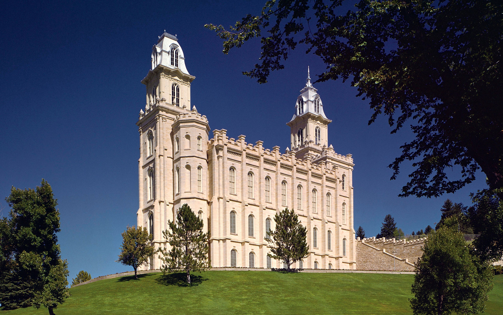
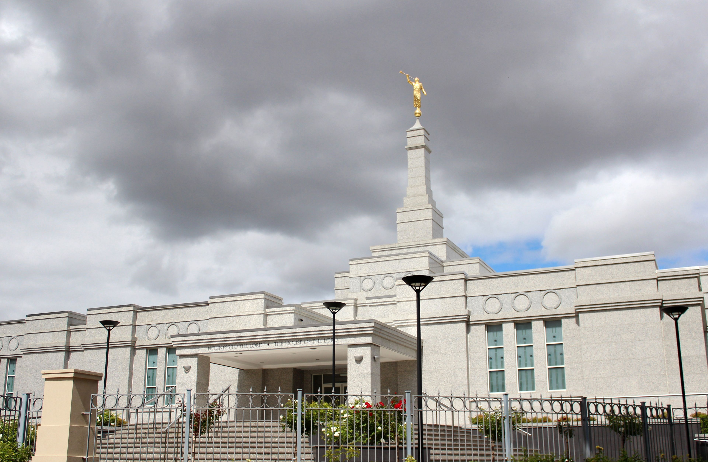
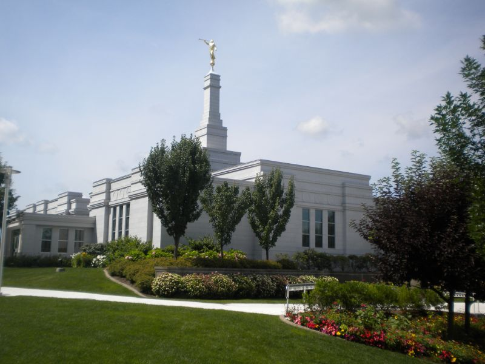

Temple Summaries

Manti, Utah Temple
- Address:
- 200 E 510 N Manti UT 84642-1701 United States
- Telephone:
- 435-835-2291
- Services:
-
Clothing rental available
Cafeteria available
No patron housing available
Distribution center nearby - History:
-
25 June 1875 - Announced
25 April 1877 - Groundbreaking
21 May 1888 - Dedicated
14 June 1985 - Rededicated - Closures:
- Current Weather:
- Baptism Schedule:
-
6:30 AM - 4:30 PM Appointments Only
4:30 PM - 7:30 PM Family Priority Time - Appointments Only - Initiatory Schedule:
- 7:00 AM - 8:00 PM Walk-ins and Appointments
- Endowment Schedule:
-
7:30 AM - 7:30 PM
Every hour on the half hour - Sealing Schedule:
- 7:00 AM - 8:20 PM Walk-ins and Appointments

Perth, Australia Temple
- Address:
- 163-173 Wordsworth Avenue Yokine WA 6060 Australia
- Telephone:
- (61) 8-9276-0000
- Services:
-
No clothing rental available
No cafeteria available
No patron housing available
No distribution center nearby - History:
-
11 June 1999 - Announced
20 November 1999 - Groundbreaking
20 May 2001 - Dedicated - Closures:
- Current Weather:
- Baptism Schedule:
-
5:00 PM - 6:00 PM Family Priority Time - Walk-ins and
Appointments
7:00 PM - 8:30 PM Church Groups - Walk-ins and Appointments - Initiatory Schedule:
-
9:30 AM - 10:30 AM Walk-ins and Appointments
11:30 AM - 12:30 PM Walk-ins and Appointments - Endowment Schedule:
-
9:30 AM Walk-ins Only
11:30 AM Walk-ins Only - Sealing Schedule:
-
9:30 AM - 10:30 AM Walk-ins and Appointments
11:30 AM - 12:30 PM Walk-ins and Appointments

Cardston, Alberta Temple
- Address:
- 348 3rd St W Cardston AB T0K 0K0 Canada
- Telephone:
- (1) 403-653-3552
- Services:
-
Clothing rental available
Cafeteria available
No patron housing available
Distribution center nearby - History:
-
27 June 1913 - Announced
27 July 1913 - Groundbreaking
26 August 1923 - Dedicated
22 June 1991 - Rededicated
2 July 1962 - Rededicated - Closures:
- Current Weather:
- Baptism Schedule:
-
10:00 AM - 12:00 PM Appointments Only
12:00 PM - 5:00 PM Walk-ins Only
5:00 PM - 7:00 PM Family Priority Time - Appointments Only
7:00 PM - 8:00 PM Church Groups - Appointments Only - Initiatory Schedule:
- 9:00 AM - 8:00 PM Walk-ins Only
- Endowment Schedule:
- Walk-ins only at 10:30 AM, 12:00 PM, 1:00 PM, 3:30 PM, 4:30 PM, 5:30 PM, 7:00 PM,
- Sealing Schedule:
- 10:00 AM - 8:00 PM Walk-ins and Appointments

Palmyra, New York Temple
- Address:
- 2720 Temple Rd Palmyra NY 14522-9573 United States
- Telephone:
- (1) 315-597-6001
- Services:
-
No clothing rental available
No cafeteria available
No patron housing available
Distribution center nearby - History:
-
21 February 1999 - Announced
25 May 1999 - Groundbreaking
6 April 2000 - Dedicated
- Closures:
- Current Weather:
- Baptism Schedule:
- Walk-ins and Appointments from 8:00 AM - 10:00 AM, 10:00 AM - 12:00 PM, 6:00 PM - 8:00 PM
- Initiatory Schedule:
-
Walk-ins and Appointments from 8:30 AM - 10:00 AM, 10:30 AM -
12:00 PM, 5:30 PM - 7:00 PM, 7:30 PM - 9:00 PM
- Endowment Schedule:
- Walk-ins only at 9:00 AM, 11:00 AM, 6:00 PM, 8:00 PM
- Sealing Schedule:
- Walk-ins and Appointments from 8:30 AM - 9:10 AM, 9:15 AM - 10:00 AM, 10:30 AM - 11:10 AM, 11:15 AM - 12:00 PM, 5:30 PM - 6:10 PM, 6:15 PM - 7:00 PM, 7:30 PM - 8:10 PM, 8:15 PM - 9:00 PM